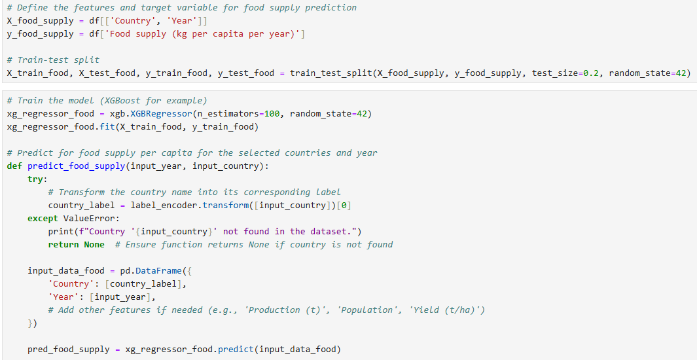
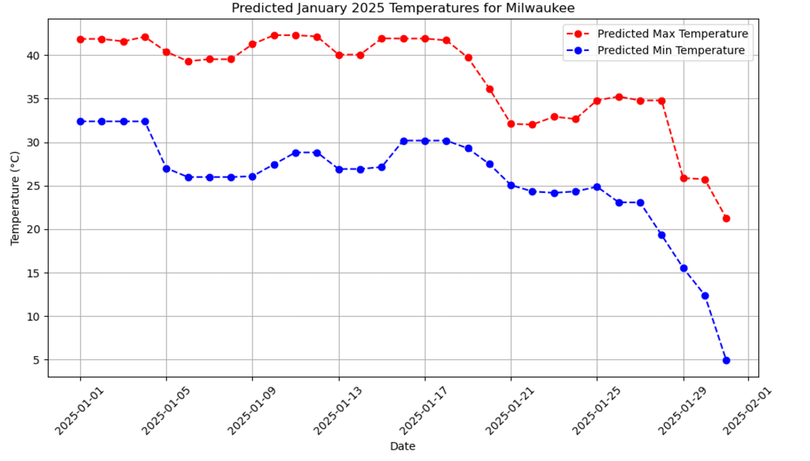
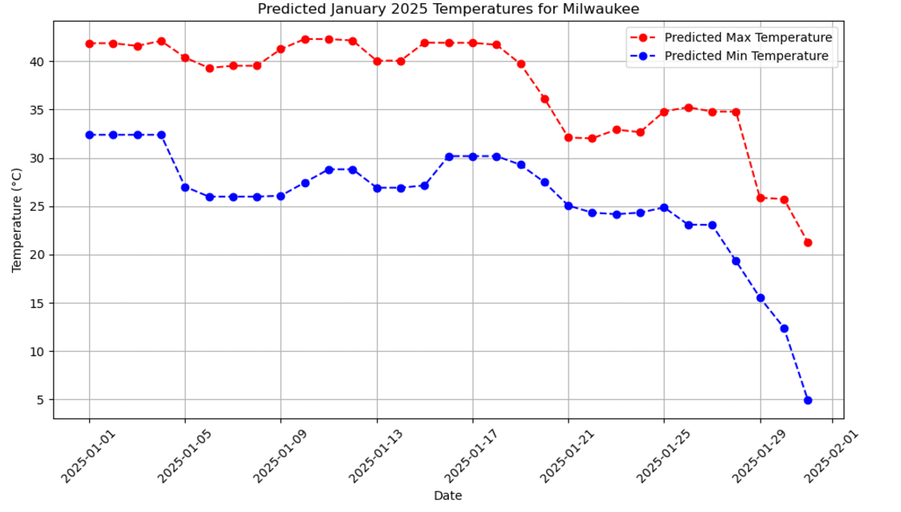

Introduction
Maize production is a key factor in global food security, influencing economic stability and food availability in many countries. Accurate forecasting of maize production can help governments, farmers, and international organizations plan for future needs, manage resources, and mitigate risks related to food shortages. This report uses machine learning, specifically the XGBoost Regressor, to predict maize production for the year 2025 based on historical data from 1961 to 2021.
Dataset Overview
The dataset includes detailed information on maize production across various countries, with indicators such as yield, production volume, food supply per capita, and population. The data covers the period from 1961 to 2021, providing a foundation for making predictions about maize production trends in the coming years.
Description of the Data
The dataset contains maize production data across multiple countries for the years 1961 to 2021.
Key columns:
Data Characteristics:
Pre-Processing
The following preprocessing steps were applied to prepare the data for modeling:
Model Selection and Training
XGBoost Regressor is a powerful machine learning algorithm that is particularly effective for regression tasks. It builds an ensemble of decision trees using a boosting technique, where each new tree corrects the errors of the previous ones. This makes it well-suited for capturing complex patterns and interactions in the data.
Key Features:
Why I Chose This Model: The maize production dataset includes country-specific factors such as population and yield that interact in complex, nonlinear ways. XGBoost is well-suited to capture these relationships. Furthermore, XGBoost handles missing values and outliers well, which was important given the characteristics of this dataset.
Tuning Parameters and Rationale
The XGBoost Regressor was trained using these parameters to predict maize production for different countries in 2025.
The XGBoost Regressor was trained to predict food supply per capita for different countries in 2025.
Prediction of Maize Production in Different Countries for 2025
The trained XGBoost model was used to predict maize production for selected countries in 2025. The model achieved an impressive R² score of 0.9887, indicating that it explained a significant portion of the variance in maize production across countries.
The following countries were selected for prediction in 2025:
These predictions can help stakeholders understand expected trends in maize production and assist in long-term agricultural planning.
Prediction of Food Supply per Capita in Different Countries for 2025
The trained XGBoost model was used to predict food supply per capita for selected countries in 2025. The model was fitted on data including 'Country' and 'Year' as the main features, and it provided insights into expected trends in food supply for the given countries.
The following countries were selected for prediction in 2025:

These predictions offer valuable insights for stakeholders, including policymakers, researchers, and organizations focused on food security. By understanding projected food supply levels, these predictions can aid in addressing potential challenges in food distribution and availability.
Top Indicators Contributing to Maize Production Over the Years
The XGBoost model provided feature importance scores, which indicated the top factors contributing to global maize production. The most influential features were:
The analysis revealed that improvements in yield and increases in harvested area were key factors driving global maize production growth over the years.
Introduction
Weather prediction plays a crucial role in various sectors such as agriculture, transportation, and energy. Accurate temperature forecasts, particularly for maximum and minimum temperatures, are essential for planning and preparedness. This report uses machine learning, specifically the Gradient Boosting Regressor, to predict maximum and minimum temperatures for different cities for the month of January 2025. By utilizing historical weather data from 1892 to 2023, this model aims to forecast temperature patterns and assist in climate-related decision-making.
Dataset Overview
The dataset provides weather information across various cities, with a focus on temperature and precipitation data. The data spans from 1892 to 2023, including daily records of maximum and minimum temperatures (tmax, tmin) and precipitation levels (prcp) for different cities.
Description of the Data
The dataset contains weather-related data for cities between 2017 and 2023. Key features include:
Key Columns:
Data Characteristics:
Pre-Processing
The preprocessing steps followed to prepare the data for modeling were:
Model Selection and Training
Gradient Boosting Regressor (GBM) is an ensemble learning method that builds a series of decision trees sequentially. Each tree corrects the errors made by the previous ones, leading to a robust model for regression tasks. GBM is well-suited for this weather prediction task, as it can effectively capture complex, nonlinear relationships between features.
Key Features of Gradient Boosting Regressor:
Why I Chose This Model: The Gradient Boosting Regressor was selected due to its ability to model complex relationships in the weather dataset, such as temporal and city-specific patterns. It is particularly suitable for datasets with nonlinear interactions and a mix of continuous and categorical features.
Tuning Parameters and Rationale
The GradientBoostingRegressor was trained to predict the standardized maximum and minimum temperatures for various cities based on their temporal and city-related features.
Prediction of January 2025 Temperatures
The trained Gradient Boosting models were used to predict maximum and minimum temperatures for cities like "Lander" and "Milwaukee" in January 2025. The predictions were based on historical data from 2017 to 2023, and the results were visualized in a plot showing the predicted temperatures for each day in January 2025.
The model provides R² scores for both maximum and minimum temperatures, indicating the accuracy of the predictions:
Evaluation for tmax:
Evaluation for tmin:
Predicting Temperatures for January 2025
Using the trained model, the following functions were implemented:
 

The plots provide a visual representation of the predicted temperatures for the selected cities, helping to understand the temperature trends over the month of January 2025.
Top Indicators Contributing to Temperature Predictions
The Gradient Boosting Regressor model used various features for temperature prediction, including:
The analysis showed that City_Label and Year were significant contributors to the prediction of both maximum and minimum temperatures, reflecting the regional and yearly temperature patterns.